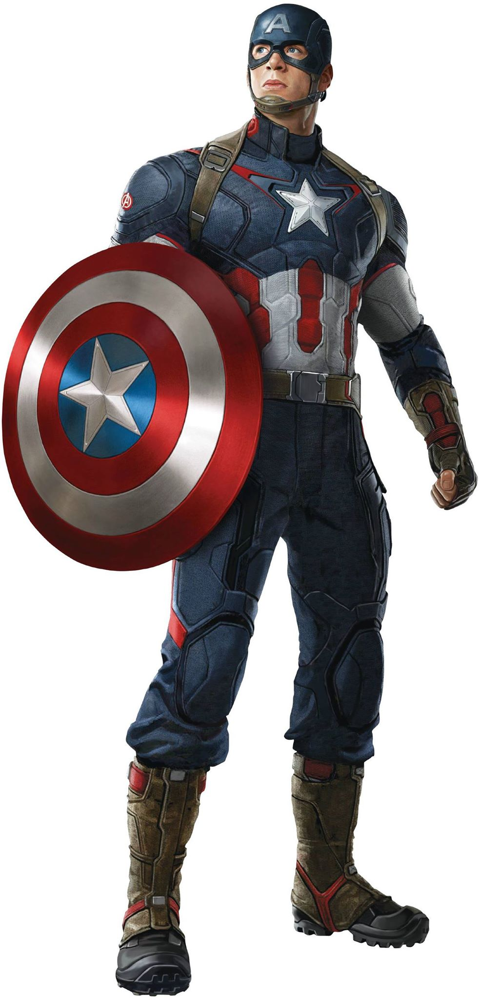

Captain America was designed as a patriotic supersoldier who often fought the Axis powers of World War II and was Timely Comics' most popular character during the wartime period. The character wears a costume bearing an American flag motif, and he utilizes a nearly-indestructible shield that he throws as a projectile.
